第一章 实用Frida入门
本章中我们介绍使用Frida的推荐环境，Frida hook Java、Frida hook native的主要姿势和技巧，以及Frida用于辅助算法还原、逆向分析数据流的主要特性——主动调用。
1.1 工作环境建议
工欲善其事，必先利其器。一个良好的工作系统体系，是后续Frida的API和接口正常工作、没有暗坑的基础，是提高工作效率的前提，和全面自动化工作的保障。
1.1.1 建议使用虚拟机
推荐使用虚拟机而不是真机，首先是因为虚拟机自带“时光机”功能，可以“时光倒流”，下图1.1.1.1为日常工作内容中，开发FART脱壳机时，创建的诸多虚拟机快照。

图1-1-1 带快照功能的虚拟机
其次虚拟机具有良好的跨平台特性，见下图1-1-2，完美支持Windows、macOS和Linux三大主流桌面平台。可以随时将完整的学习和工作环境整体打包，在各种环境中进行部署和迁移。
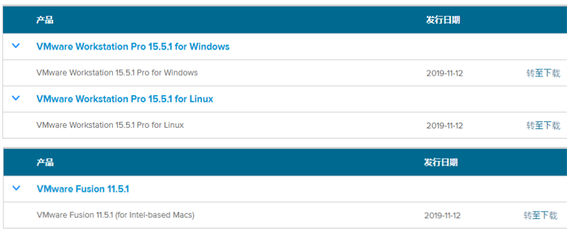
图1.1.1.2 VMware虚拟机支持主流桌面平台
最后，虚拟机具有良好的隔离特性，做实验不会“污染”真机，是测试全新功能的天然“沙盘”，推荐读者使用VMware出品的系列虚拟机。
1.1.2 建议使用Ubuntu操作系统
经常使用Windows操作系统的开发者会发现，很多开发工具会在官网上明确建议不要在Windows上进行部署和开发，平时在Ubuntu上运行正常的工具或框架，到了Windows上总会出现各种各样的问题，坊间甚至有这样的笑话“我学习编程的过程中一半的苦难均是Windows赐予。”
Windows操作系统是一个小白用户用起来比较舒服，但是并不适合专业的开发者；同理还有macOS操作系统，其主推的Xcode开发套件总是在各种编译场合“秀存在感”，加上其并没有官方的包管理器，总是用着第三方的“homebrew”并不是一个严谨的选择方案。
在这里还是推荐大家使用Ubuntu这个谷歌官方建议的AOSP编译环境系统，如果具体到版本细节，则是网站上介绍的1604LTS，LTS是长期支持版（Long Time Support）的缩写，提供长达五年的声明周期更新支持，保证稳定和安全。见下图1.1.2.1，Ubuntu 1604 LTS的主界面。
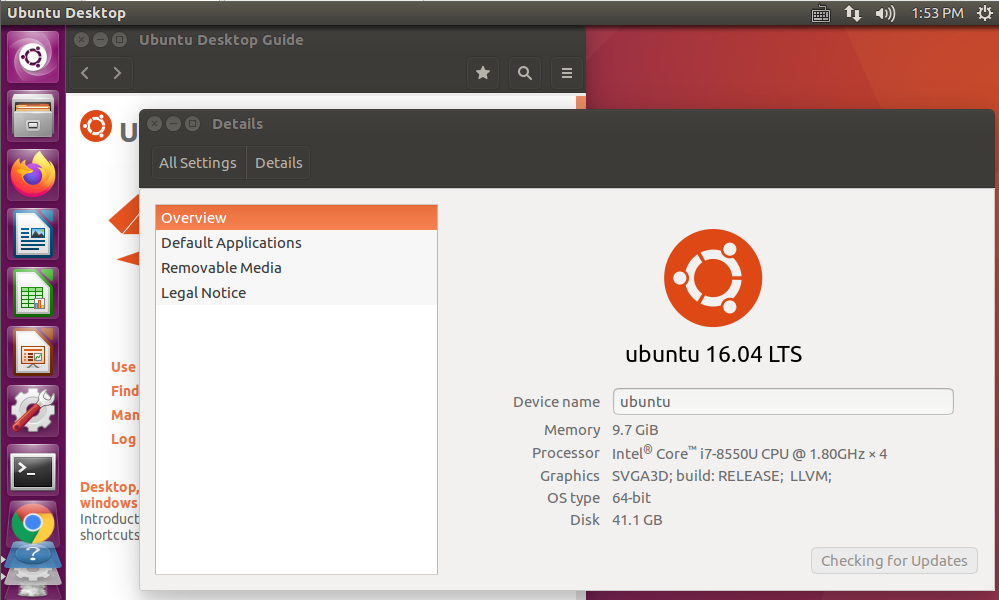
图1.1.2.1 Ubuntu 1604 LTS的主界面
不管是Frida工作开发环境，Ollvm开发，gdb、lldb调试，ART虚拟机定制开发，AOSP源码编译等，我们都将在Ubuntu 1604 LTS操作系统中完成。如果使用Windows、macOS，将会耗费大量的时间在莫名bug的定位和消除上，而时间的成本是很高的。
在Ubuntu操作系统之外，也顺便推荐一下Kali Linux操作系统，Kali Linux是基于Debian的Linux发行版，与Ubuntu师出同门，是设计用于数字取证操作系统。Kali Linux预装了许多渗透测试软件，包括Metasploit、BurpSuite、sqlmap、nmap 、以及Cobalt Strike等，是一整套开箱即用的专业渗透测试工具箱。见下图1.1.2.2，Kali Linux自带Vmware镜像版本，下载解压双击打开.vmx文件即可开机。
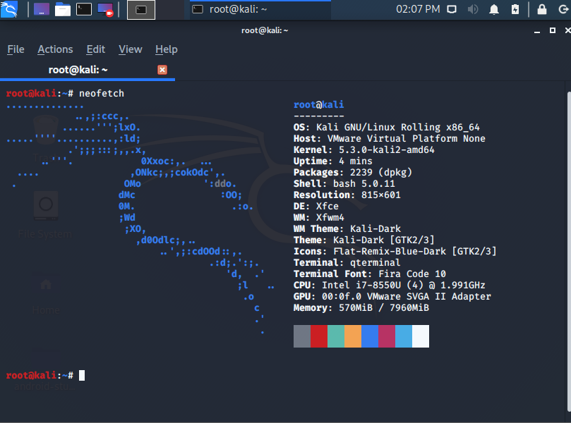
图1.1.2.2 Kali Linux的VMware虚拟机镜像
Kali Linux只有一个root用户，以最高权限执行所有键入的命令，使开发者可以把全部精力投入到逆向和安全开发的工作中去，不用考虑各种多用户带来的权限问题，非常方便。而且界面美观，讨人喜欢。
1.1.3 建议使用的实用小工具
首先推荐htop这款加强版top工具，可以动态查看当前活跃的、占用高的进程，如下图1.1.3.1所示。这一点在我们编译安卓源码时非常好用，当我们执行make命令之后，可以肉眼可见速度看到内存Mem跑到底之后，开始侵占Swp的进度条。Uptime是开机时间，Load average是平均负载，比如我们是四核CPU，那么平均负载跑到4的时候说明系统满载了，其余操作指南可以去网上搜索。
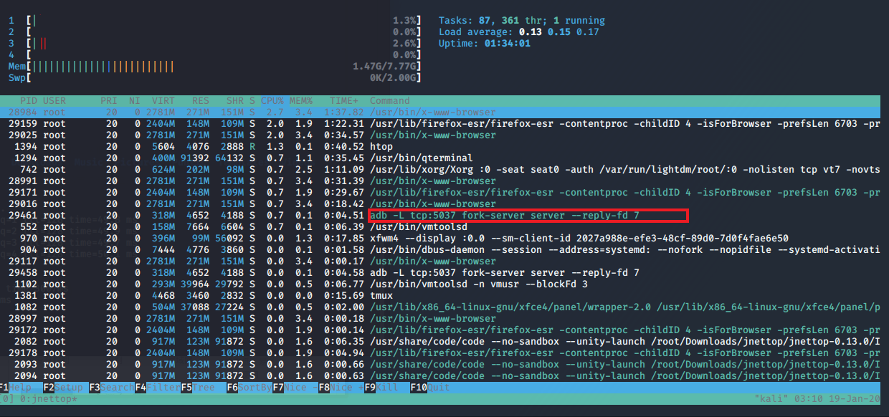
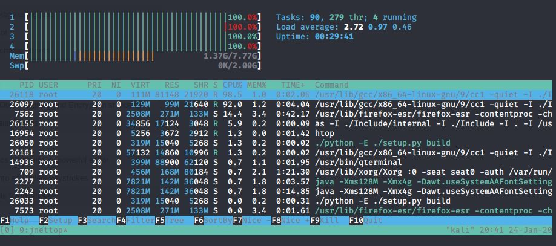
1.1.3.1 动态查看当前进程
然后推荐jnettop这款流量查看工具，首先我们在安装和使用软件（比如Frida）的过程中，可以查看其下载和安装进度，甚至在AOSP编译时，仍然在连接国外的服务器下载依赖包等等行为一览无遗，如果速度过慢可以及时将其掐断，换上科学上网工具继续安装或编译。还有就是在抓包时往往有奇效，比如实时查看对方IP等，见下图1.1.3.2。
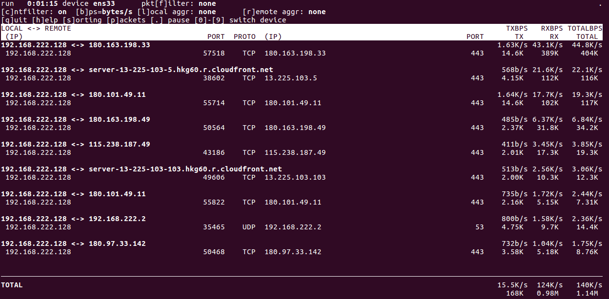
1.1.3.2 实时查看当前网卡流量及IP
接着推荐文件名搜索工具——tree，在解包apk后，搜索文件的名字非常好用。如果想要把路径全部打印出来，可以加上一些选项及配合过滤工具grep，比如tree -NCfhl|grep jpg则会把文件夹中所有文件名带jpg的文件全路径输出到终端，非常好用。
如果要搜索文件内容，则使用grep -ril "xxxx" *这样的命令，比如我们要在使用脱壳工具脱出来的一堆dex中寻找java.security.KeyStore这样的字符串，可以在同目录下运行grep -ril "java.security.KeyStore" *命令，则会打印出包含该字符串的dex文件名。
最后推荐tmux这款终端复用神器，可从在一个终端屏幕上管理多个终端（准确说是伪终端），使用该工具，用户可以连接或断开当前会话，而保持终端在后台运行，管理VPS非常方便，可以保持当前会话永不断开（除非重启）。
以上的工具中有些系统已经自带，有些没有自带的情况，可以使用系统自带的apt包管理工具进行安装。
1.1.4 Frida版本管理和开发环境
Frida版本非常多，升级很快，很多两三年前的代码已经无法跑在最新的Frida上，要是有一种工具，可以在电脑上安装多个python环境，顺便在每个python里都安装一个Frida就好了，这样同时可以装上较老版本的Frida和最新版的Frida，自由切换，岂不美哉。
还真有这样的工具——pyenv，github上接近两万赞的python环境管理神器，我们来直观的看一下他的功能，见下图1.1.4.1。
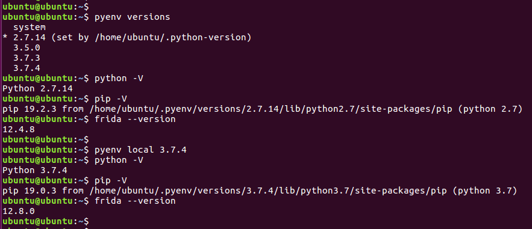
图1.1.4.1 即时改变python版本和Frida版本
可以非常直观地看到python版本、路径和Frida版本跟着pyenv命令改变而改变。除了系统自带的system的python环境我还额外安装了四个python环境，每一个都带独立完整、互不干扰的pip包管理环境，对于做实验来说非常便利，想用就装、用完就删、再用再装。关于pyenv如何安装这里不再赘述，大家可以去看官网文档及网上资料，教程非常多。
然后是推荐的开发环境，这里建议使用官方Frida项目开发环境搭建步骤来搭建：
git clone https://github.com/oleavr/frida-agent-example- 进入目录
npm install - 使用
vscode等IDE打开此工程，在agent文件夹下编写JavaScript，会有智能提示。 npm run watch会监控代码修改自动编译生成js文件python脚本或cli加载_agent.js。
在vscode中打开agent文件夹，编写JavaScript代码就会有代码提示。鼠标移到相应的API上也会有说明，按住ctrl再点击则跳到API的源码里去了，见下图1.1.4.2。
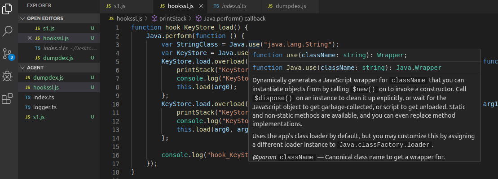
图1.1.4.2 API提示及源码跳转
1.2 实用动静态分析工具
打造完适合实验和上手的系统环境之后，我们来推荐几个安卓应用分析必备工具。
1.2.1 Java反编译神器：jadx
首先推荐功能强大的jadx，官方网站为：https://github.com/skylot/jadx，可以直接在releases页面下载其最新版，解压即可使用。我们在分析应用签名算法的时候，可以很方面的直接以sign为关键字搜索整个apk，见下图1.2.1.1。
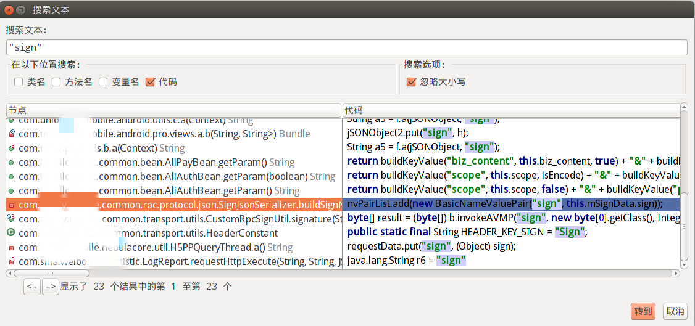
图1.2.1.1 关键字搜索
对代码或者类名右键，可以直接查找用例，在哪里使用了这些类或接口，见下图1.2.1.2。
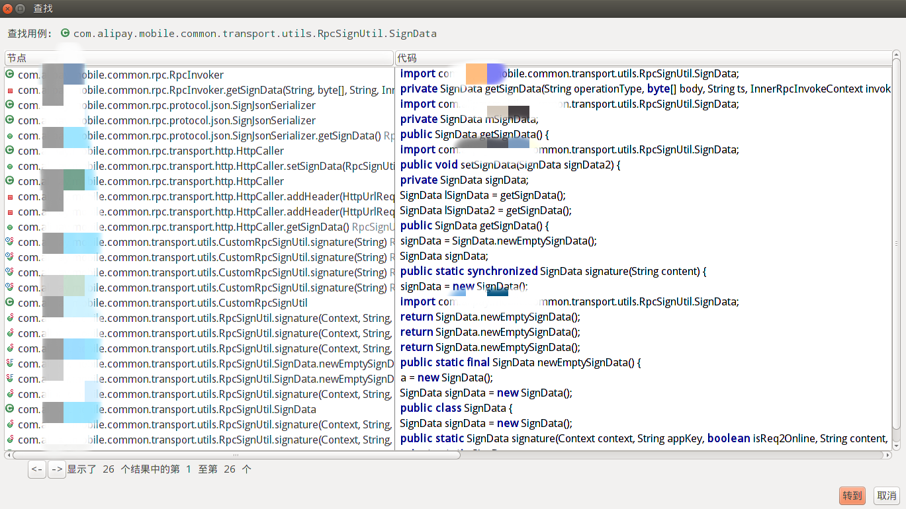
图1.2.1.2 查询接口或类的用例
在类的标题栏点击右键可以直接复制类名，这个功能用在Frida中, 使用Java.use时很方便。
var RpcSignUtil = Jave.use("com.xxxxx.xxxxx.common.transport.utils.RpcSignUtil");
而且最新版的jadx还可以在code和smali之间切换，非常方便，有时候我们有看smali的需求，比如匿名内部类的时候，就可以直接切过去看smali，见下图1.2.1.3。
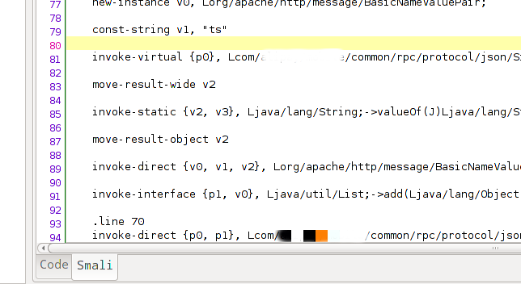
图1.2.1.3 code和smali切换
1.2.2 二进制查看修改神器：010 Editor
010 Editor的功能在其名字中就体现出来了，010代表二进制，Editor则是修改器，我们经常用到的它的几个功能，首先是复制黏贴二进制数据，见下图1.2.2.1。
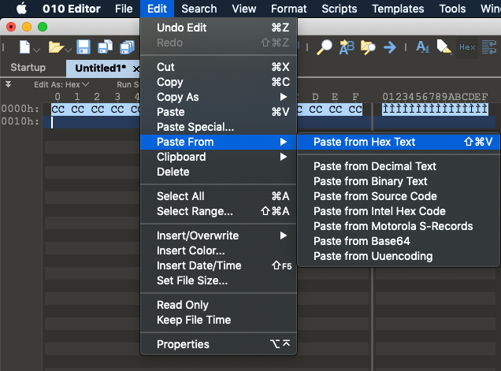
图1.2.2.1 复制黏贴二进制数据
其次是它的模板功能，010 Editor内置了大概数百个常见文档格式的模板，包括了ELF、dex等安卓应用可执行文件及库文件常用格式，拖进去可以直接解析，在逆向、算法还原和脱壳重组时经常会用到。见下图1.2.2.2，010 Editor的模板解析效果，直观而易懂。
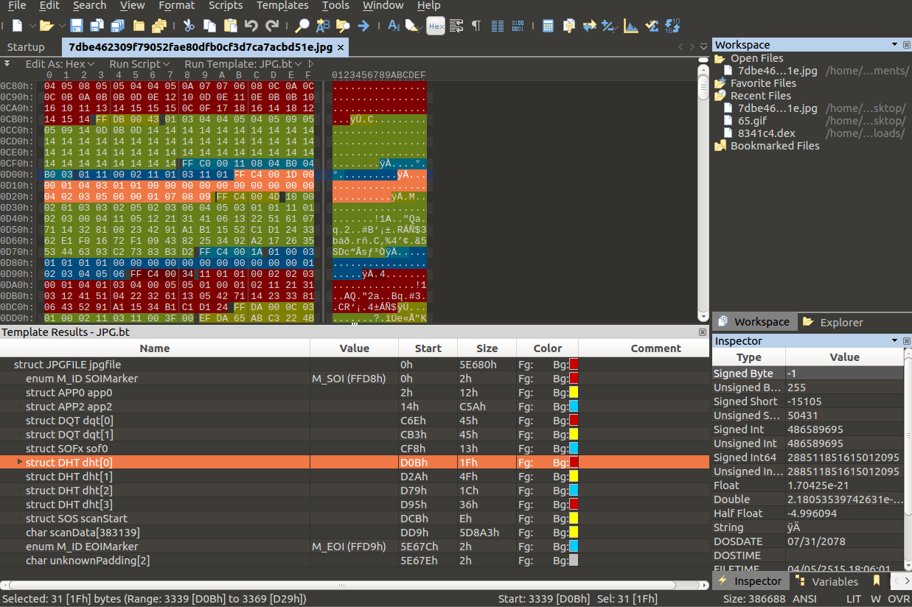
图1.2.2.2 模板解析效果
最后，010 Editor还有这良好的性能，比如打开一个3G大的文本文件只需要十多秒，打开后，拖动查看内容也不会卡，这在我们从模拟执行的IDA trace脚本中恢复原始算法的工作中帮助非常巨大，见下图1.2.2.3，010 Editor打开包含两千多万行trace log的文件。
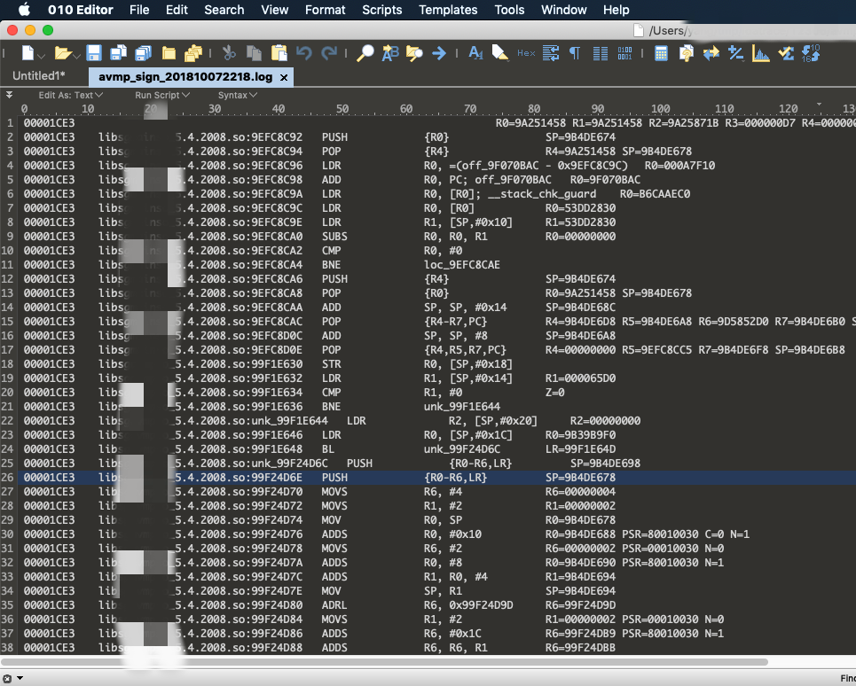
图1.2.2.3 IDA trace后的log文件
1.2.3 Native反编译及调试神器：IDA
平时我们使用IDA来分析Native库so文件时，用的最多的有以下几个功能：
-
看字符串：
Strings: 按 Shift+F12 打开字符串子菜单 -
看导入函数：
Imports: 在反汇编窗口的菜单栏可以看到 Imports，这一栏里面可以看到 so 里面调用的导入函数 -
看导出函数：
Exports: 在反汇编窗口的菜单栏可以看到 Exports，这一栏里面可以看到 so 的导出函数 -
基址重定位：
Rebease program:IDA 加载模块的时候，会以基址0加载分析so模块，但是so模块运行在Android上的时候，每次的加载地址不是固定的。因此需要Rebease基址，对运行时so的基址相同，方便静态分析，见下图1.2.3.1。
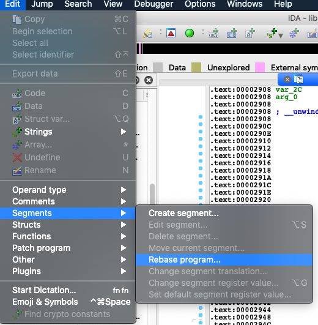
图1.2.3.1 IDA的基址重定位功能
init_array：init_array是一个函数数组，在so加载时，用于初始化一些全局变量或者解密，init_array中的函数是so中运行最早的函数。按快捷键 Ctrl+S后，如下图1.2.3.2所示。
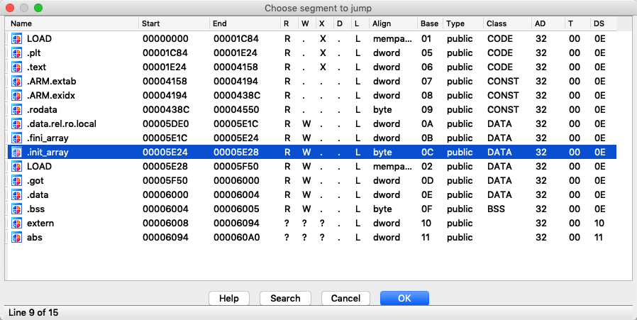
图1.2.3.2 init_array函数数组
- 显示
opcode：在菜单栏Options - General打开IDA Options, 修改Number of opcode bytes(non-gragh) [4]，显示效果如下图1.2.3.3所示，其中16位为thumb指令，32位为arm指令。
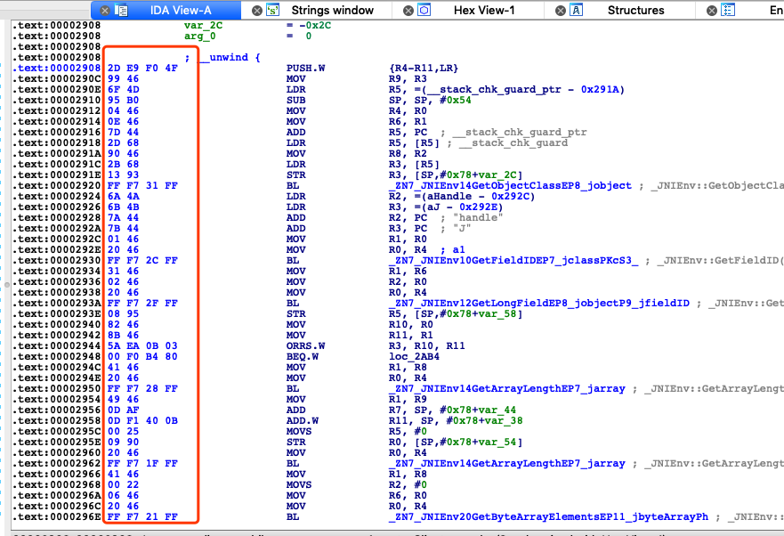
图1.2.3.3 opcode显示效果
-
arm与thumb指令互相切换：按快捷键Alt+g, Value 填 0，切换为 arm, Value 填 1，切换为 thumb。 -
ida python控制台可以执行一些idapython的命令，当需要写复杂一点的脚本的时候，可以使用File - "Script Command"写脚本。当脚本更复杂的情况下，用其他python ide环境写好脚本后，使用File - "Script File"导入脚本。 -
最后推荐一个
findcrypt-yara插件，可以找到so中常见算法的常量，效果如下图1.2.3.4所示。
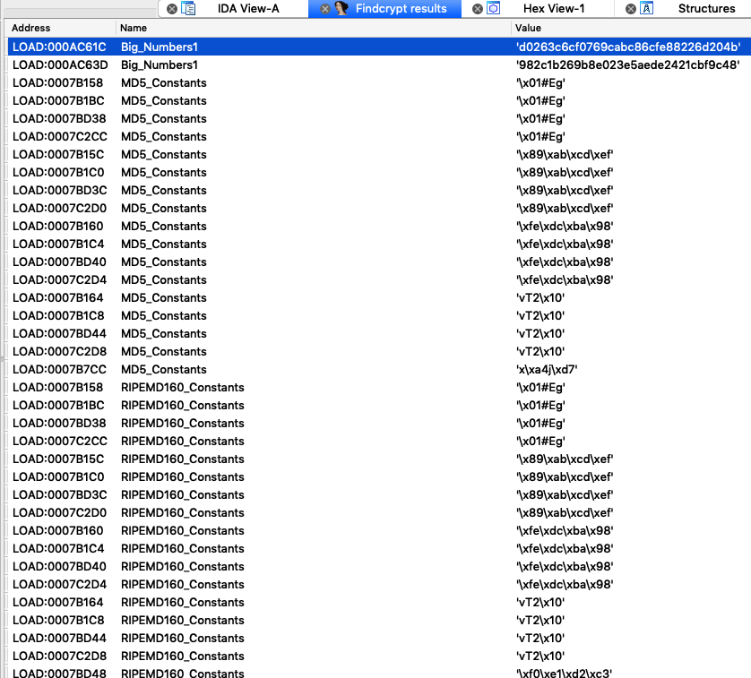
图1.2.3.4 使用findcrypt-yara找到so中的常见算法常量
- 使用IDA调试安卓
so时，需要在手机上运行IDA的android_server，当调试32位so时运行android_server即可，当调试64位so时需要在手机上运行android_server64。android_server和android_server64在IDA 安装目录下的 dbgsrv 中。
1.2.4 Native内存断点调试神器：GDB、hyperpwn
IDA的动态调试已经足够好用了，功能也非常强大，常用的功能都有，看汇编、指令、寄存器、线程等都非常方便，为什么我们还要使用没有界面的纯指令的GDB呢？因为IDA缺少了一个非常重要的功能，那就是下内存断点的功能。
有时候我们经常会有这样的需求，分析一个踩内存导致的死机问题，通过日志分析到了被踩内存的地址，但是无法找到被谁踩的，或者我们在分析vmp虚拟机保护的时候，我们希望在进入某个方法的时候启动这个内存断点，退出这个方法的时候再关闭这个内存断点，这时候IDA是爱莫能助的，因为它天生就缺少这个功能。
我们用过Windows上的神器Ollydbg的话都会体验过OlldyDbg的神奇功能：内存访问断点，当已经通过动态或者静态分析定位到关键的内存地址以后，可以通过对感兴趣的内存地址下读/写断点，当命中断点时，则当前pc指向正要读/写当前地址的汇编指令。
想要开启GDB的内核调试功能，需要重新编译手机的linux内核，打开hardware breakpoint支持，具体方法本书后文会详细阐述，最终命中内存断点的效果如下图1.2.4.1所示。
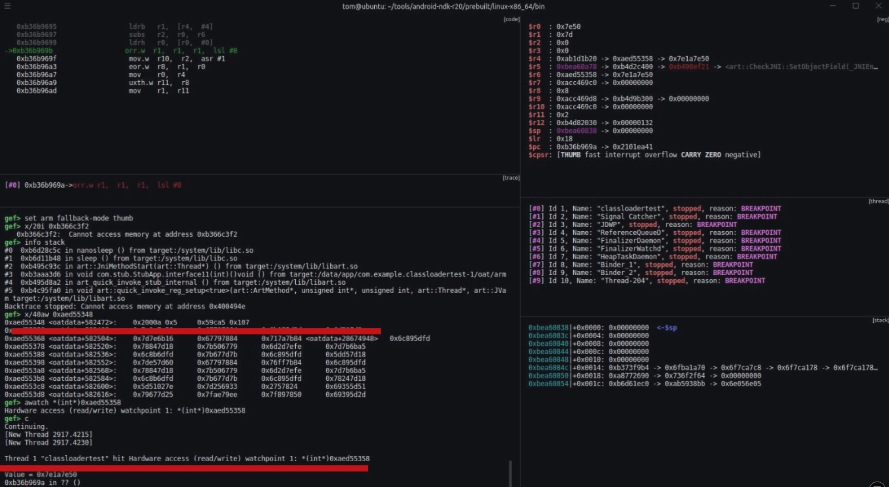
图1.2.4.1 命中内存断点
可以看到我们的GDB界面跟传统的不大一样，因为我们使用了一个叫做hyperpwn的插件，有了这款插件，使用GDB调试起来方便很多，多了很多可视化的窗口和命令，还支持状态保存的功能，可以用鼠标滚轮浏览历史状态。
1.3 Frida hook Java
一般情况下Frida有两种用途：
-
一种是
hook各种类的方法，查看从其经过的数据，比如参数、调用栈和返回值等，并修改这个方法的具体实现。这种情况非常常见，这也是Frida作为hook框架的基本功能。 -
第二种是主动调用一个函数，查看其数据流的构成，常用在黑盒调用或算法还原上。黑盒调用是指不知道该算法的具体实现流程，只是喂给它参数，它返回给我们结果即可。算法还原是指我们在参数的中间组成过程中下了
hook，然后通过主动调用喂给我们自己的简易实验数据，比如经典的aaaabbbbccccdddd，观察在hook处的数据形式，从而一步一步还原算法。
接下来会有很多具体的案例。
1.3.1 hook
hook一个签名函数，查看参数和返回值
function hook_java() { Java.perform(function () { var RpcSignUtil = Java.use("com.xxxxx.xxxxx.common.transport.utils.RpcSignUtil"); RpcSignUtil.signature.implementation = function (context, appKey, isReq2Online, content, useSignAtlas, signType) { var result = this.signature(context, appKey, isReq2Online, content, useSignAtlas, signType); console.log("RpcSignUtil.signature:", context, appKey, isReq2Online, content, useSignAtlas, signType, result); return result; }; }); console.log("hook_RpcSignUtil..."); }
hook动态加载的Dex，打印其doCommandNative函数的参数和返回值
function hook_dex() { Java.perform(function () { var str_find_class = "com.xxxxx.wireless.security.adapter.JNICLibrary"; Java.enumerateClassLoaders({ onMatch: function (loader) { try { if (loader.findClass(str_find_class)) { console.log(loader); Java.classFactory.loader = loader; } } catch (error) { } }, onComplete: function () { } }); var JNICLibrary = Java.use(str_find_class); JNICLibrary.doCommandNative.implementation = function (i, objArr) { var result = this.doCommandNative(i, objArr); console.log("JNICLibrary.doCommandNative:", i, objArr, result); return result; }; console.log("hook_hot_dex..."); }); }
hook证书加载函数java.security.KeyStore.load函数，打印其参数——证书密码。
function hook_KeyStore_load() { Java.perform(function () { var StringClass = Java.use("java.lang.String"); var KeyStore = Java.use("java.security.KeyStore"); KeyStore.load.overload('java.security.KeyStore$LoadStoreParameter').implementation = function (arg0) { printStack("KeyStore.load1"); console.log("KeyStore.load1:", arg0); this.load(arg0); }; KeyStore.load.overload('java.io.InputStream', '[C').implementation = function (arg0, arg1) { printStack("KeyStore.load2"); console.log("KeyStore.load2:", arg0, arg1 ? StringClass.$new(arg1) : null); this.load(arg0, arg1); }; console.log("hook_KeyStore_load..."); }); }
hook校验服务器证书函数checkServerTrusted来绕过证书绑定。可以看到我们更改了方法的实现后并没有返回值，也就是说把该方法置空就可以。
function hook_ssl() { Java.perform(function() { var ClassName = "com.android.org.conscrypt.Platform"; var Platform = Java.use(ClassName); var targetMethod = "checkServerTrusted"; var len = Platform[targetMethod].overloads.length; console.log(len); for(var i = 0; i < len; ++i) { Platform[targetMethod].overloads[i].implementation = function () { console.log("class:", ClassName, "target:", targetMethod, " i:", i, arguments); //printStack(ClassName + "." + targetMethod); } } }); }
hook类的所有子类
Java.enumerateLoadedClasses({ onMatch: function(aClass) { //迭代和判断 if (aClass.match(pattern)) { //做一些更多的判断，适配更多的pattern var className = aClass.match(/[L]?(.*);?/)[1].replace(///g, "."); //进入到traceClass里去 traceClass(className); } }, onComplete: function() {} });
hook类的所有方法
function traceClass(targetClass) { //Java.use是新建一个对象哈，大家还记得么？ var hook = Java.use(targetClass); //利用反射的方式，拿到当前类的所有方法 var methods = hook.class.getDeclaredMethods(); //建完对象之后记得将对象释放掉哈 hook.$dispose; //将方法名保存到数组中 var parsedMethods = []; methods.forEach(function(method) { parsedMethods.push(method.toString().replace(targetClass + ".", "TOKEN").match(/sTOKEN(.*)(/)[1]); }); //去掉一些重复的值 var targets = uniqBy(parsedMethods, JSON.stringify); //对数组中所有的方法进行hook，traceMethod也就是第一小节的内容 targets.forEach(function(targetMethod) { traceMethod(targetClass + "." + targetMethod); }); }
hook方法的所有重载
//目标类 var hook = Java.use(targetClass); //重载次数 var overloadCount = hook[targetMethod].overloads.length; //打印日志：追踪的方法有多少个重载 console.log("Tracing " + targetClassMethod + " [" + overloadCount + " overload(s)]"); //每个重载都进入一次 for (var i = 0; i < overloadCount; i++) { //hook每一个重载 hook[targetMethod].overloads[i].implementation = function() { console.warn("n*** entered " + targetClassMethod); //可以打印每个重载的调用栈，对调试有巨大的帮助，当然，信息也很多，尽量不要打印，除非分析陷入僵局 Java.perform(function() { var bt = Java.use("android.util.Log").getStackTraceString(Java.use("java.lang.Exception").$new()); console.log("nBacktrace:n" + bt); }); // 打印参数 if (arguments.length) console.log(); for (var j = 0; j < arguments.length; j++) { console.log("arg[" + j + "]: " + arguments[j]); } //打印返回值 var retval = this[targetMethod].apply(this, arguments); // rare crash (Frida bug?) console.log("nretval: " + retval); console.warn("n*** exiting " + targetClassMethod); return retval; } }
1.3.2 主动调用
- 主动调用静态函数，直接调用签名类
com.xxxxxx.mobile.common.transport.utils.RpcSignUtil的签名方法signature()，并喂给它我们自己构造的参数context, "9101430221728_ANDROID", false, "test sign", false, 0，然后等待该方法把计算出来的签名值返回给我们，也就是signdata.sign.value属性。
function call_static_function_signature() { Java.perform(function () { var currentApplication = Java.use("android.app.ActivityThread").currentApplication(); var context = currentApplication.getApplicationContext(); var RpcSignUtil = Java.use("com.xxxxxx.mobile.common.transport.utils.RpcSignUtil"); var singdata = RpcSignUtil.signature(context, "9101430221728_ANDROID", false, "test sign", false, 0); console.log("Sign:", singdata.sign.value); }); console.log("call_static_function_signature..."); }
- 主动调用成员函数，
get、set变量，下方案例中主动调用了对象的getmDid()成员方法，并给对象的.p成员赋值后再次调用。
function call_member_function_getmDid() { Java.perform(function () { var deviceobj = null; Java.choose("com.xxxxx.mobile.common.info.DeviceInfo", { onMatch: function (instance) { deviceobj = instance; }, onComplete: function () { if (deviceobj) { console.log(deviceobj, deviceobj.getmDid(), deviceobj.p.value); deviceobj.p.value = "test"; console.log(deviceobj, deviceobj.getmDid(), deviceobj.p.value); } } }); }); console.log("call_member_function_getmDid..."); }
- 主动调用异常处理类，打印当前调用栈；
function printStack(name) { Java.perform(function () { var Exception = Java.use("java.lang.Exception"); var ins = Exception.$new("Exception"); var straces = ins.getStackTrace(); if (straces != undefined && straces != null) { var strace = straces.toString(); var replaceStr = strace.replace(/,/g, "\\n"); console.log("=============================" + name + " Stack strat======================="); console.log(replaceStr); console.log("=============================" + name + " Stack end=======================\r\n"); Exception.$dispose(); } }); }
1.3.3 打造自动化工具
我们可以把以上介绍的这些脚本，打造成一些自动化工具，比如支持模糊/精准搜索类或方法的ZenTrace，以及不写一行代码、傻瓜式hook工具objection，我们将会在下一章详细介绍其用法与部分源码。
1.4 Frida hook Native
Frida不仅可以hookJava层函数，还可以hookNative层的so库中的函数，我们来看看代码是怎样写的。
1.4.1 hook
hookopen函数，运行在attach模式，这种模式不改变函数的功能，只能用来打印输入输出参数和返回值。
function attach_open() { var open_addr = Module.findExportByName(null, "open"); Interceptor.attach(open_addr, { onEnter: function (args) { console.log("open(", ptr(args[0]).readCString(), ")"); }, onLeave: function (retval) { } }); }
hookopen函数，运行在replace模式，这种替换模式可以把目标函数替换成另一个功能的函数。
function replace_open() { var open_addr = Module.getExportByName('libc.so', 'open'); var open = new NativeFunction(open_addr, 'int', ['pointer', 'int']); Interceptor.replace(open_addr, new NativeCallback(function (path_ptr, flags) { var path = path_ptr.readUtf8String(); console.log('Opening "' + path + '"'); var fd = open(path_ptr, flags); console.log('Got fd: ' + fd); return fd; }, 'int', ['pointer', 'int'])); }
hook绝对地址，也称作inline hook，
function inline_hooke() { var base_libmpaas_crypto = Module.findBaseAddress("libmpaas_crypto.so"); if (base_libmpaas_crypto) { console.log(base_libmpaas_crypto); var addr_000022DC = base_libmpaas_crypto.add(0x000022DC + 1); console.log(addr_000022DC); Interceptor.attach(addr_000022DC, { onEnter: function (args) { console.log("addr_000022DC onEnter:", this.context.r0, this.context.r1, this.context.r5, this.context.r10, ptr(this.context.r10).add(this.context.r5).readU8().toString(16)); }, onLeave: function (retval) { } }); } }
1.4.2 主动调用
- 向
filename文件写入当前日期。
function call_open_file(filename) { var openPtr = Module.getExportByName('libc.so', 'open'); var open = new NativeFunction(openPtr, 'int', ['pointer', 'int']); var writePtr = Module.getExportByName('libc.so', 'write'); var write = new NativeFunction(writePtr, 'int', ['int', 'pointer', 'int']); var closePtr = Module.getExportByName('libc.so', 'close'); var close = new NativeFunction(closePtr, 'int', ['int']); var buffer = Memory.allocUtf8String(filename); var fd = open(buffer, 0); console.log("open:", fd); var str = new Date().toString() + "\r\n"; var write_buffer= Memory.allocUtf8String(str); if (fd > 0) { write(fd, write_buffer, str.length); close(fd); } }
- 打印当前
so的调用栈。Backtracer.ACCURATE会准确些，但是有时候会为空，主要看so有没有符号了。如果用Backtracer.FUZZY参数则得到的结果不一定准确。
console.log("open" + ' called from:\n' + Thread.backtrace(this.context, Backtracer.ACCURATE) .map(DebugSymbol.fromAddress).join('\n') + '\n');
dump内存中已经解密完成的so。很多加固厂商会对so库进行加密，比如常见的指定方法或指定section进行加密，等运行时再使用init_array中的函数对so进行解密，而我们如果调试这些解密函数进行解密需要花很大的功夫，只要等其自己解密完成后去内存里“捞”出来就行了。
function dump_so(so_name) { Java.perform(function () { var currentApplication = Java.use("android.app.ActivityThread").currentApplication(); var dir = currentApplication.getApplicationContext().getFilesDir().getPath(); var libso = Process.getModuleByName(so_name); console.log("[name]:", libso.name); console.log("[base]:", libso.base); console.log("[size]:", ptr(libso.size)); console.log("[path]:", libso.path); var file_path = dir + "/" + libso.name + "_" + libso.base + "_" + ptr(libso.size) + ".so"; var file_handle = new File(file_path, "wb"); if (file_handle && file_handle != null) { Memory.protect(ptr(libso.base), libso.size, 'rwx'); var libso_buffer = ptr(libso.base).readByteArray(libso.size); file_handle.write(libso_buffer); file_handle.flush(); file_handle.close(); console.log("[dump]:", file_path); } }); }
1.4.3 打造自动化工具
我们可以把以上介绍的这些脚本，打造成一些自动化工具，比如自动脱壳脚本、或全内存暴力脱壳工具FRIDA-DEXDump，以及JNI接口、主动注册接口查看工具等等。下一章中我们会详细介绍其使用方法及部分源码。